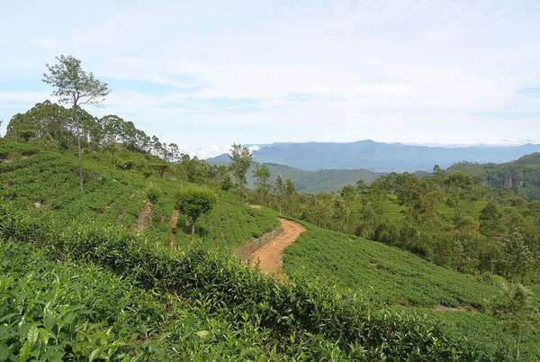
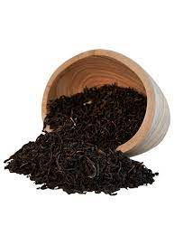
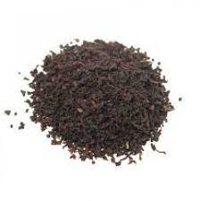
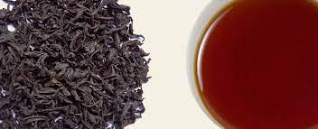
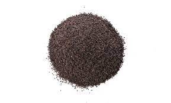

Sri lankan Tea Plantation
Its not hard to grow tea.as long as it gets all the nessary cultivation factors such as rain and the correct ammount of temperature. The sri lankan Plantation area of tea is more of a "CAMILLIA SINENSIS" which is a robust shrub. which is able to tolerate a fairly wide range of more or less topical climates, altitudes and soil cnditions.
Kandy

The Kandy tea-Growing district from part of the Central Province of sri lanaka. Surrounding hills in Nilambe, Hantane, Pussellawa, Gampola and Hewaheta. Kandy is not high as in the southern central part. So the tea of the kandy region is described as 'Mid-Grown'.
Nuwara Eliya

Nuwara eliya is the best known of Sri lanka's best tea-growing districts. this has the highest average elevation from the other grwing areas with the most mountains. this region produces teas of exquisite bouquet combined with its low tempurature. the infusion is the lightest of all Ceylon Tea.
Uda Pussellawa

Uda pussellawa is a tiny populated district almost entirly dedicated to the tea cultivation. It enjoys climatic conditions very different from other plantation areas. Uda pusellawa is close to Nuwara Eliya so its compared to it, which makes its tea more darker in cup.
Uva
Uva is a remote dustrict which is exposed to the Northeast and southwest monsoons. The tea in this area is special, unmistakable character and exotically aromatic flavour.The mellow and smooth taste of of Uva tea has once exprienced can easily identify.
| Plantation Area | Featured Name | Type of tea availble | Image of tea |
|---|---|---|---|
| Kandy | Intensely Full-Bodied | Black Tea Blend |  |
| Nuwara Eliya | Delicatelt Fragrent | Broken Orange Pekoe Tea |  |
| Uda Pussellawa | Exquisitely tangy | Broken Orange Pekoe Fanning's |  |
| Uva | Exotically aromatic | Elteb Tea |  |